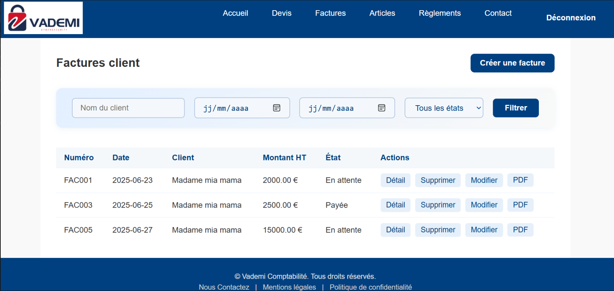
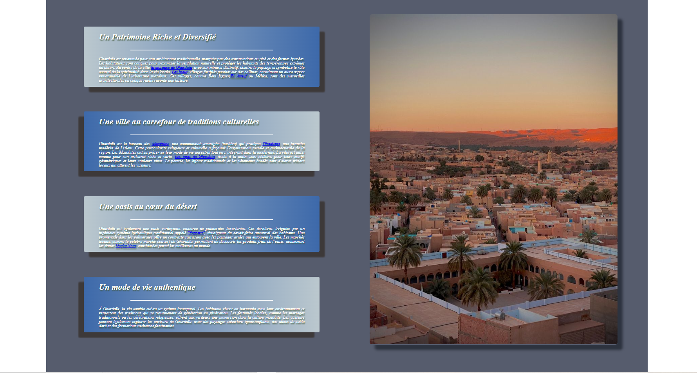
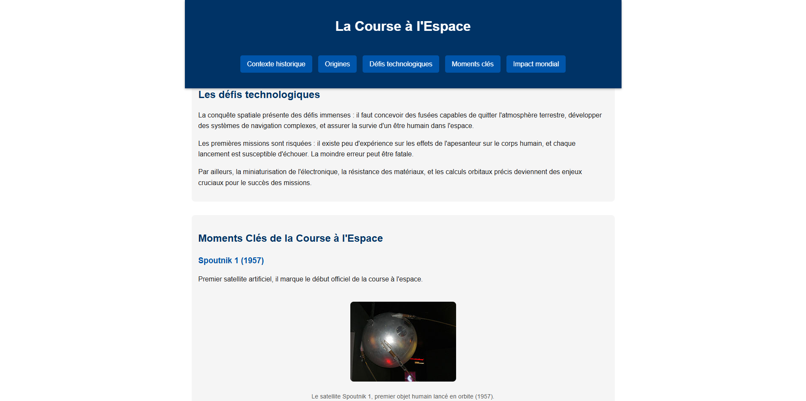
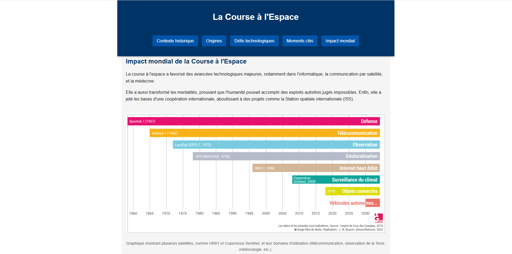

Étudiant en BTS SIO spécialisé en développement logiciel, je suis passionné par les nouveaux défis et j'aime développer continuellement mes compétences techniques.
J'ai hâte de collaborer, d'apprendre de nouvelles technologies et de contribuer à des projets impactants avec vous.
Ce projet a été réalisé dans le cadre d'un stage de première année de BTS SIO, chez l'entreprise Vademi Cybersécurité.
Le projet avait pour but la réalisation d'un site web permettant la gestion des factures et des devis, et plus généralement de la comptabilité de l'entreprise.
Captures d'Ecran

Ce projet a fait intervenir de nombreuses technologies et outils avec lesquels je n'étais pas familier, tels que :
. L'utilisation de frameworks pour le back-end avec FastAPI.
. La découverte des API REST et leur implémentation/création.
. L'initiation à l'utilisation d'ORM.
. La découverte des fonctions et triggers en PostgreSQL.
. L'authentification forte MFA avec utilisation de JWT Token et de serveur SMTP.
. La transformation des fiches de comptabilité en format PDF et leur envoi par mail (cette fonctionnalité n'a pas été finalisée par manque de temps).
Site de Vente de Jeu Vidéo
Il s'agit d'un projet scolaire de première année de BTS SIO, pour mettre en pratique les concepts de programmation orientée objet et d'architecture MVC appris en cours.
J'ai choisi de me lancer dans la création d'un site de vente de jeux vidéo, permettant aux utilisateurs de se connecter et d'acheter des jeux ainsi que d'y laisser des commentaires et des notes.
Le langage de programmation utilisé est le PHP et PostgreSQL pour la base de données. Le site s'inspire directement de l'esthétique et de la forme de la plateforme de vente de jeux vidéo "Steam".
Captures D'écran
Ce projet contient les fonctionnalités suivantes :
. L'inscription et la connexion pour les utilisateurs
. L'achat et la consultation des différents paniers ainsi que leur gestion
. Un système de commentaires et de notes laissés par les utilisateurs sur les jeux qu'ils souhaitent
. Une barre de recherche afin de permettre aux utilisateurs de trouver les jeux qui les intéressent plus rapidement
-
Site Touristique
Il s'agit la de mon premier projet véritable projets , un site servant d'introduction au Web avec HTML et CSS.
Ce dernier porte sur le thème du tourisme en Algérie
Captures d'Ecran

Ce projet a servi d'initiation au concept fondamentaux d'HTML et CSS comme les FlexBox , Les Classe CSS la Séparation du Contenu ...
-
Site initiation à l'Accessibilité Numérique
Il s'agit d'un court projet néanmoins intéressant qui vise à consolider et vérifier les connaissance et pratiques de l'Accessibilité Numérique et Web
Le projet porte sur le sujet la Conquete Spatiale
Captures d'Ecran


Ce projet a permis la vérification des fondammentaux et acquis auprès d'un professionnel en Accessibilité Numérique